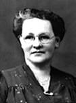

fiche familiale
*******************************************************************************
  |
Domina Beaudoin décède à l'âge de 69 ans. Naissance le 15 janvier 1894 à Ste-Cécile de Masham (La Pêche) Décès le 5 avril 1963 à Hull. Sépulture au cimetière St-Rédempteur de Hull Occupation: Cultivateur Héritier de la terre paternelle sise à Hull au nord du lac Leamy sur la rive ouest de la rivière Gatineau. Père: Isaïe Baudoin Beaudoin Mère: Catherine Renaud (sa famille) Mariage le 6 octobre 1925 à Ste-Cécile de Masham (La Pêche) Épouse: Alda Martin décède à l'âge de 61 ans. Naissance en 1900 à Ste-Cécile de Masham (La Pêche) Décès le 2 mars 1961 à Hull. Père: François Martin Mère: Alda Bourgeois (sa famille) |
  |
Enfant 1 Thérèse Beaudoin décède à l'âge de 67 ans. Naissance le 1 août 1926 à Kirkland Lake, ON Décès le 2 sep 1993 à Hull Sépulture au cimetière Notre-Dame de Hull Mariage le 5 août 1950 à St-Raymond-de-Pennafort de Hull. Conjoint: Roger-Gaston Guérin n. 9 jan. 1928 d. avant 2007 Père: Auguste Guérin Mère: Dina Beauchamp |
Mariage le 23 août 1975 à Gatineau
Conjointe: Joanne Bertrand
Enfant 2 Lise Guérin
décède à l'âge de 55 ans.
Mariage le 19 oct 1991 à Ste-Rose-de-Lima
Conjoint: Gaétan Lavallée
Enfant 3 Nicole Guérin
Mariage le 3 jul 1976
Conjoint: Jacques Cloutier
Enfant 4 Daniel Guérin
Mariage le 23 oct 1982 à Aylmer
Conjointe: Nicole Allen
Conjointe: Ginette Clément
Enfant 5 Luc Guérin
Mariage le 3 août 1991 à Hull
Conjointe: Solange Robitaille
Enfant 6 Sylvie Guérin
Mariage le 24 sep 1988 à Gatineau
Conjoint: Gilles Ouellette
Enfant 7 Pierre Guérin
Mariage le 7 oct 1964 à Hull
Conjointe: Suzanne Fortin
-------------------------------------------------------------------------------
 |
Enfant 2 Gertrude Beaudoin décède à l'âge de 15 ans. Naissance le 1 nov 1928 à Kirkland Lake, ON Décède le 26 août 1944 à Hull |
Enfant 3 Madeleine Beaudoin
Naissance en déc 1929 à Kirkland Lake, ON
-------------------------------------------------------------------------------
  |
Enfant 4 Jean-Louis Beaudoin décède à l'âge de 78 ans. Naissance en déc. 1930 à Kirkland Lake, ON Décède le 4 juillet 2009 à Gatineau Mariage en 1958 à St-André-Avelin Conjointe: Ghislaine Lockman décède à l'âge de 71 ans Naissance le 12 mars 1936 à St-André-Avelin Décède le 16 août 2007 à Gatineau Père: Henry Lockman Mère: Athaïs Chalifoux |
Enfant 2 Maurice Beaudoin
Mariage le 2 juin 1984 à Gatineau
Conjointe: Sylvie Gingras
Conjointe: Martyne Gobeil
Enfant 3 Charles Beaudoin
Mariage le 17 juin 1989 à Gatineau
Conjointe: Lynne Ladouceur
Enfant 4 Shirley Beaudoin
Conjoint: Marc Audette
Enfant 5 Louise Beaudoin
Conjoint: Jean-François Bélec
-------------------------------------------------------------------------------
 |
Enfant 5 François Beaudoin décède à l'âge de 87 ans. Naissance le 10 mars 1933 à Hull Décède le 21 août 2020 à Gatineau Mariage le 21 août 1965 à Buckingham Conjointe: Denise Lamarche Naissance le 12 déc 1935 à Buckingham Père: Armand Lamarche Mère: Cécile Beaudoin |
Mariage le 15 jul 1995 à Gatineau
Conjoint: Guy Jolette
Enfant 2 Marie-France Beaudoin
Conjoint: Micheal Darlow
-------------------------------------------------------------------------------
 |
Enfant 6 Jacqueline Beaudoin décède à l'âge de 71 ans. Naissance le 5 sep 1934 à Hull Décès le 29 jan 2006 à Gatineau Mariage en 1958 à Gatineau Conjoint: Jean-Louis St-Jean décède à l'âge de 62 ans. Naissance en 1931 à Gatineau Décès le 9 mars 1993 à Hull Père: Oscar St-Jean Mère: Alda Cousineau |
Conjointe: France Desforges
Enfant 2 Denis St-Jean
Conjointe: Claudine Raby
Enfant 3 Chantale St-Jean
Conjoint: Daniel Lévesque
-------------------------------------------------------------------------------